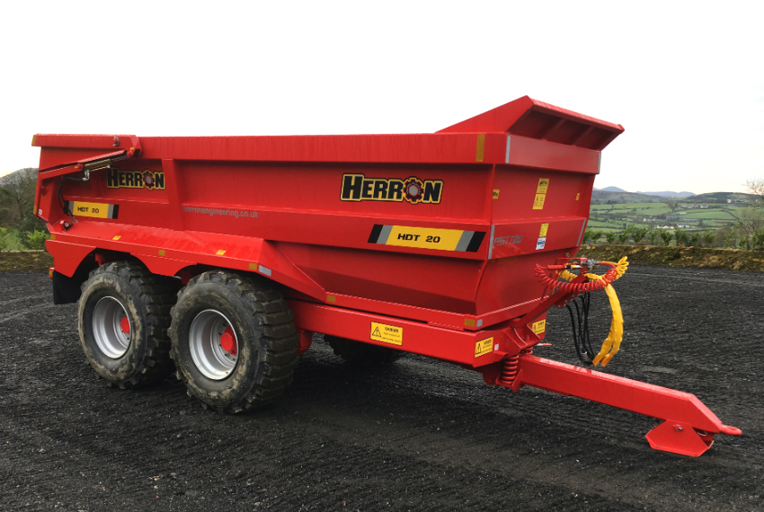

PRODUCT RANGE
HDT Industrial Dump Trailer
Herron HDT Industrial Dump Trailers with a load capacity from 20 to 25 tonnes is a heavy duty range tailored for the construction, recycling, earth moving and quarrying industries.
Discuss hdt industrial dump trailer ↗
Let’s work through
the details.
Herron HDT Industrial Dump Trailers with a load capacity from 20 to 25 tonnes is a heavy duty range tailored for the construction, recycling, earth moving and quarrying industries. Our HDT trailers are designed with efficiency and safety in mind – they are fitted with a heavy duty multi-leaf spring suspension, heavy duty fully plated chassis, air/hydraulic load sensing valve, hardened wear plate floor, twin lifting tipping rams, tapered body for easy discharge, sprung drawbar and hydraulic high lift door.